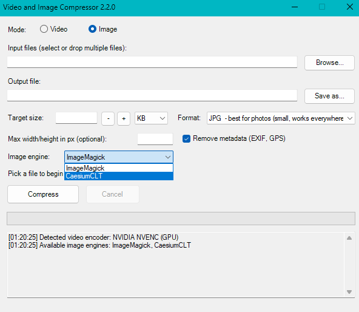

FFmpeg
Video bitrate estimation using FFprobe duration data, automatic GPU detection, CPU fallback and optional 720p downscaling. Supports MP4, MKV, MOV and WebM.
DESKTOP APPLICATION / MEDIA UTILITY
A unified Windows utility for target-size video and image compression, with multiple processing engines and batch support.
PROJECT EVOLUTION
This project began as my video-only compressor. With AI-assisted development, technical research, and existing open-source software, I expanded it into a single desktop application for both videos and images.
My PowerShell application coordinates external compression tools rather than implementing their codecs from scratch. I use a common interface to select files, choose a target size, and manage the processing workflow.
View original version 1.2.2APPLICATION SHOWCASE

Video and Image modes automatically adapt to the selected files. The interface provides format and target size controls, optional dimension limits, metadata removal, progress, cancellation, and live logs.
COMPRESSION ENGINES
Video bitrate estimation using FFprobe duration data, automatic GPU detection, CPU fallback and optional 720p downscaling. Supports MP4, MKV, MOV and WebM.
Adaptive quality and resolution search, JPEG optimization, PNG filter optimization, and support for multiple image formats and color profiles.
Native target-size processing for JPG and WebP, lossless PNG optimization, and output verification with resolution adjustment when needed.
Image output is accepted only when it fits the requested size; video output is estimated and may exceed its target, in which case the app warns the user.
BATCH WORKFLOW
The app processes multiple videos or multiple images with shared settings. Each file receives its own target size, not a combined size budget. Failed files are logged, and cancellation preserves completed outputs.
RELIABILITY & DISTRIBUTION
Temporary output files are published after successful processing. Batch output names avoid collisions, and explicit overwrite confirmation is used for existing single-file destinations.
Image metadata removal is enabled by default, with compatible color-profile retention. Error logs rotate at 5 MB, retaining up to three archives.
Inno Setup packages the application, its required tools, shortcut entries and third-party notices for Windows.
The app's own code is documented under the MIT license. Bundled independent tools retain their respective upstream licenses; FFmpeg, ImageMagick, and CaesiumCLT are credited in the project notices.
LEARNING OUTCOMES